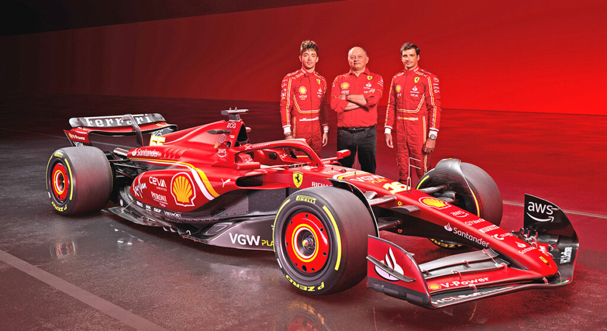

Fundada el 16 de Noviembre de 1929 Maranello, Italia, por Enzo Ferrari, la Scuderia Ferrari es el único equipo que ha competido en todas las temporadas de la máxima categoría, desde 1950 hasta la actualidad.
El equipo
A cargo del monoplaza de nombre SF-24, se encuentran como pilotos principales el Español Carlos Sainz Jr. y el Monegasco Charles Leclerc, comandados por Frédéric Vasseur.
Logros importantes
- 16 Campeonatos de constructores (más que cualquier otro equipo)
- 15 Campeonatos de pilotos (más que cualquier otro equipo)
- 243 Victorias de carrera (más que cualquier otro equipo)
- 808 Podios de carrera (más que cualquier otro equipo)
- 249 Poles (más que cualquier otro equipo)
- 260 Vueltas rápidas de carrera (más que cualquier otro equipo)
- 1082 apariciones en Grandes Premios (más que cualquier otro equipo)
- Máxima cantidad de victorias en una temporada: 15 (2002 y 2004)
- Mayor cantidad de puntos en una temporada: 768 (2018)
- Más dobletes (1-2 en carrera) en una temporada: 9 (2002)
- Más podios consecutivos: 53 (1999-2002)
- Más puntos consecutivos: 81 carreras (2010-2016)
- Mayor cantidad de vueltas lideradas en una temporada: 933 (2004)
- Más poles consecutivas: 10 (1952-1953)
- Más títulos consecutivos de constructores: 6 (1999-2004)
- Más títulos consecutivos de pilotos: 5 (Michael Schumacher, 2000-2004)
¿Te gustó mi trabajo?
Déjame tus datos para contactarte (esto solo es para probar que sirven los forms)